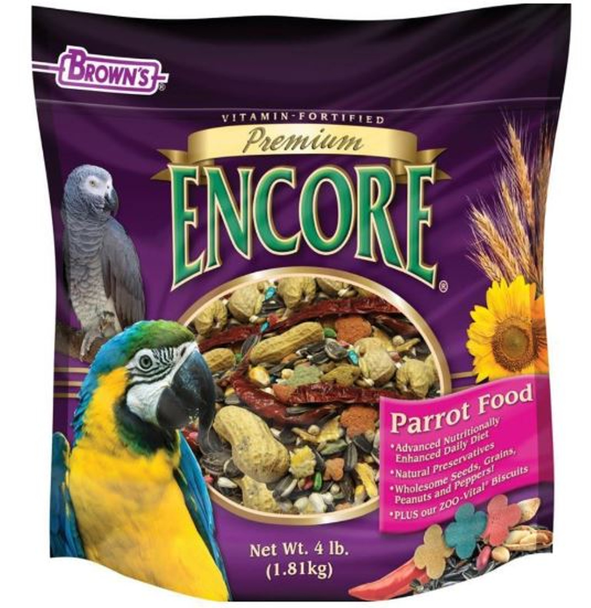

large and Small Parrot Feed
-
Small Parrot Feed

Encore Premium Cockatiel and Parakeet Blend is a great nutritional source for small bird species like cockatiels and parakeets. It provides them with a healthy balanced mix of seed and pellets.
-
Large Parrot Feed
Encore Premium Parrot Food is perfect for larger species like African Greys or Macaws. It provides them with a great mix of seed, pellet, and fruit to keep your larger birds healthy and happy.
-
Wild Bird Feed

Kaytee nut and fruit blend is perfect for wild bird species. It is all natural, a healthy mixture of wild seed as well as fruit. Perfect for people who do not own birds, but prefer watching wild birds fly around their yards.